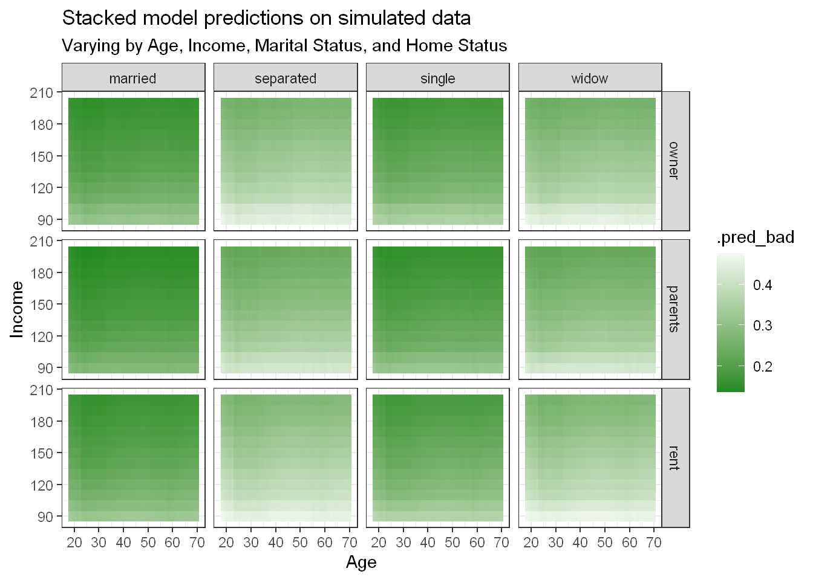

Today we will create an ensemble of multiple learning algorithms, and try to see if they produce a better fit to the data than if we were to use just one machine learning model.
We will use the stacks package from the tidymodels ecosystem to accomplish this, and the data we will be using is credit_data from the modeldata package.
library(tidyverse)
data("credit_data",package = "modeldata")
credit_data <- credit_data %>%
na.omit()
options(kableExtra.html.bsTable = TRUE )
knitr::opts_chunk$set(warning=FALSE, message=FALSE)The outcome variable in the credit_data dataset is the Status variable which is a factor with two levels, good or bad which denotes the credit status of an individual. The dataset contains the following information.
| Variable | Type | Description |
|---|---|---|
| Status |
factor
|
Credit Status |
| Seniority |
int
|
Job seniority (years) |
| Home |
factor
|
Type of home ownership |
| Time |
int
|
Time of requested loan |
| Age |
int
|
Client’s age |
| Marital |
factor
|
Marital status |
| Records |
factor
|
Existence of records |
| Jon |
factor
|
Type of job |
| Expenses |
int
|
Amount of expenses |
| Income |
int
|
Amount of income |
| Assets |
int
|
Amount of assets |
| Debt |
int
|
Amount of debt |
| Amount |
int
|
Amount requested of loan |
| Price |
int
|
Price of good |
We will use a variety of learning algorithms to best predict the outcome.
Logistic regression
Random Forest
Support Vector Machines
Each of these models will have various hyperparameters that need to be tuned. By bundling all these models in an ensemble, all the stated model configurations will be considered and the final ensemble model will pick the best models out of these.
library(tidymodels)
library(themis)
library(stacks)
set.seed(135)
credit_split <- initial_split(credit_data,strata = Status)
credit_train = training(credit_split)
credit_test = testing(credit_split)
set.seed(123)
folds <- vfold_cv(credit_train,v=5,strata = Status)
ctrl_grid <- control_stack_grid()
ctrl_resamples <- control_stack_resamples() Let’s create a simple logistic model
credit_simple_lgt_rec <-recipe(Status~.,data=credit_train) %>%
step_rm("Time") %>%
step_dummy(all_nominal(),-all_outcomes())
simple_lgst_mod <- logistic_reg() %>%
set_engine("glm") %>%
set_mode("classification")
simple_lgst_wf <- workflow() %>%
add_model(simple_lgst_mod) %>%
add_recipe(credit_simple_lgt_rec)
simpled_lgst_res <- fit_resamples(simple_lgst_wf,
resamples = folds,
control = ctrl_resamples)Let’s create a more complex logistic regression model with more feature engineering and using a varying value for the penalty \(\lambda\) and mixture \(\alpha\).
complex_lgt_rec <- recipe(Status~.,data=credit_train) %>%
step_rm("Time") %>%
step_YeoJohnson(all_numeric()) %>%
step_other( Marital, threshold = 0.05, other = "Other marital" ) %>%
step_other( Home, threshold = 0.1, other = "Other home" ) %>%
step_relevel(Marital,ref_level = "Other marital") %>%
step_relevel(Home, ref_level = "Other home") %>%
step_dummy(all_nominal() , -all_outcomes() ) %>%
step_normalize(all_numeric()) %>%
step_zv(all_predictors()) %>%
step_smote(Status,skip = TRUE)
logistic_mod <- logistic_reg(penalty = tune(),mixture = tune()) %>%
set_engine("glmnet") %>%
set_mode("classification")
lgst_wf <- workflow() %>%
add_model(logistic_mod) %>%
add_recipe(complex_lgt_rec)
set.seed(123)
grid_vals <- grid_max_entropy(penalty(),mixture(),size=5)
complex_lgst_res <- tune_grid(lgst_wf,
resamples = folds,
grid= grid_vals,
control = ctrl_grid)Let’s look at random forest model
rand_forest_mod <-
rand_forest(mtry = tune(),min_n = tune(),trees = 500) %>%
set_mode("classification") %>%
set_engine("ranger")
credit_bagged_rec <- recipe(Status~.,data=credit_train) %>%
step_rm("Time")
rand_forest_wf <- workflow() %>%
add_recipe(credit_bagged_rec) %>%
add_model(rand_forest_mod)
set.seed(123)
rand_fr_grid <- grid_max_entropy(mtry(range = c(2L,6L)),min_n(),size=10 )
rand_forest_res <- tune_grid(object = rand_forest_wf,
resamples = folds,
grid = rand_fr_grid,
control = ctrl_grid)Let’s use a Support Vector Machine Model, we will use a radial basis kernel and a polynomial kernel.
svm_rbf_mod <- svm_rbf(cost=tune(),rbf_sigma =tune()) %>%
set_engine("kernlab") %>%
set_mode("classification")
svm_rec <- recipe(Status~.,data=credit_train) %>%
step_rm("Time") %>%
step_dummy(all_nominal(),-all_outcomes()) %>%
step_zv(all_predictors()) %>%
step_corr(all_predictors(), skip = TRUE,) %>%
step_normalize(all_numeric())
svm_rbf_wflow <- workflow() %>%
add_model(svm_rbf_mod ) %>%
add_recipe(svm_rec)
set.seed(123)
svm_rbf_grid <- grid_max_entropy(cost(),rbf_sigma(),size=6 )
svm_rbf_res <- tune_grid(svm_rbf_wflow,
grid = svm_rbf_grid,
resamples = folds,
control = ctrl_grid)The tuning parameter degree tuning was causing problems, it turns out using degree() gives us a double when we would rather have an int, so naming this tuning parameter as "degree" then passing it to degree_int() solves this issue.
svm_poly_mod <- svm_poly(cost=tune(),scale_factor = tune(),degree=tune("degree")) %>%
set_engine("kernlab") %>%
set_mode("classification")
svm_poly_wflow <- workflow() %>%
add_model(svm_poly_mod ) %>%
add_recipe(svm_rec)
set.seed(123)
svm_poly_grid <- grid_max_entropy( cost(),scale_factor(),degree = degree_int(), size=8 )
svm_poly_res <- tune_grid(svm_poly_wflow,
grid = svm_poly_grid,
resamples = folds,
control = ctrl_grid)Let’s now stack up all the models
credit_stack <- stacks() %>%
add_candidates(simpled_lgst_res) %>%
add_candidates(complex_lgst_res) %>%
add_candidates(rand_forest_res) %>%
add_candidates(svm_rbf_res) %>%
add_candidates(svm_poly_res)Now we fit the stack and view the resulting ensemble model.
credit_model_stack <- credit_stack %>%
blend_predictions()
fit_credit_model_stack <- credit_model_stack %>%
fit_members()
fit_credit_model_stack## # A tibble: 3 x 3
## member type weight
## <chr> <chr> <dbl>
## 1 .pred_good_complex_lgst_res_1_1 logistic_reg 2.85
## 2 .pred_good_rand_forest_res_1_08 rand_forest 2.79
## 3 .pred_good_simpled_lgst_res_1_1 logistic_reg 0.0184Below are a few helper functions to help display the metrics
# Function to get the ROC AUC
pred_roc_auc <- function(model){
bind_cols(credit_test %>% select(Status),
predict(model,credit_test,type="prob")) %>%
roc_auc(truth=Status, .pred_bad )
}
# Function to get the Accuracy
pred_accuracy <- function(model){
bind_cols(credit_test %>% select(Status),
predict(model,credit_test)) %>%
accuracy(truth=Status, .pred_class )
}
# Produce a table of results
tabled_metric <- function(model,model_name){
bind_rows(
pred_roc_auc(model),
pred_accuracy(model)
) %>%
pivot_wider(names_from = .metric,values_from = .estimate) %>%
mutate(model=model_name) %>%
select(model,everything(),-.estimator)
}Below are the roc_auc and accuracy values for the stacked model
tabled_metric(fit_credit_model_stack,"Stack Model")## # A tibble: 1 x 3
## model roc_auc accuracy
## <chr> <dbl> <dbl>
## 1 Stack Model 0.869 0.831We can compare the stacked model to it’s constituent models
# Select the best model
fitted_model <- function(workflow,results){
workflow %>%
finalize_workflow(results %>% select_best("roc_auc") )%>%
fit(credit_train)
}
simple_lgst_fit <- simple_lgst_wf %>% fit(credit_train)
complex_lgst_model <- fitted_model(lgst_wf,complex_lgst_res)
rf_model <- fitted_model(rand_forest_wf,rand_forest_res)
svm_rbf_model <- fitted_model(svm_rbf_wflow,svm_rbf_res)
svm_poly_model <- fitted_model(svm_poly_wflow,svm_poly_res)
all_tabled <- bind_rows(
tabled_metric(fit_credit_model_stack,"Stack Model"),
tabled_metric(simple_lgst_fit,"Simple Logistic"),
tabled_metric(complex_lgst_model,"Complex Logistic" ),
tabled_metric(rf_model,"Random Forest" ),
tabled_metric(svm_rbf_model,"SVM RBF" ),
tabled_metric(svm_poly_model,"SVM Polynomial" )
)Now that we have all the models, we can see which did best.
| model | roc_auc | accuracy |
|---|---|---|
| Stack Model | 0.869 | 0.831 |
| Complex Logistic | 0.867 | 0.791 |
| Simple Logistic | 0.859 | 0.824 |
| SVM RBF | 0.849 | 0.811 |
| Random Forest | 0.846 | 0.804 |
| SVM Polynomial | 0.840 | 0.791 |
As we can confirm, the stack model performed best over all other models in terms of roc_auc and accuracy. But the logistic models were close behind
ggplot(all_tabled,aes(x=roc_auc,y=accuracy))+geom_point(col="red",size=2)+
geom_text(aes(label= model),vjust=-.5 )+
xlim(0.835,0.87)+ylim(0.775,0.84)+
labs(title="Performance of models on test set")+
theme_bw() Note: In practice you wouldn’t use so many models in the final test phase, but this is for purely demonstrational purposes.
Let’s see what kind of predicts the model is making on fake, simulated data
fake_data <- crossing(Seniority=10,
Home=c("owner","rent","parents"),
Age=18:70,
Marital=c("married","single","separated","widow"),
Records=c("no"),
Job=c("partime"),
Expenses=60,
Income=seq(90,200,10) ,
Assets=5662,
Debt=400,
Amount=1000,
Price=1488,
Time=1)We simulate data with several fixed attributes, but vary a few of them. Namely we vary Home, Age,Marital and Income to see how changes in these attributes change the predicted outcome.
We will consider two models. The simple logistic model and the stacked model.
bind_cols(fake_data,
predict(simple_lgst_fit,fake_data,type="prob" )) %>%
ggplot(aes(x=Age,y=Income,))+
geom_raster(aes(fill=.pred_bad))+
facet_grid(Home~Marital)+
theme_bw()+
scale_fill_gradient2(low="forestgreen",high="firebrick3",mid="white",midpoint = 0.5)+
labs(title="Simple Logistic model predictions on simulated data",subtitle="Varying by Age, Income, Marital Status, and Home Status")Darker green tones represent high probabilities of someone having a good credit score, Darker red tones represent high probabilities of predicting someone having a bad credit score. The white tone denotes a 50/50 split between the two classes.
The simple logistic model predicts that someone who is married will generally have a good credit status, but if someone is separated or widowed, then the chances increase. The increase is especially noticeable as the age of an individual increases.
bind_cols(fake_data,
predict(fit_credit_model_stack,fake_data,type="prob" )) %>%
ggplot(aes(x=Age,y=Income,))+
geom_raster(aes(fill=.pred_bad))+
facet_grid(Home~Marital)+
theme_bw()+
scale_fill_gradient2(low="forestgreen",high="firebrick3",mid="white",midpoint = 0.5)+
labs(title="Stacked model predictions on simulated data",subtitle="Varying by Age, Income, Marital Status, and Home Status")
However, the stacked model generally predicts everyone to have a good credit status, though the probability itself varies depending on what attributes are being considered.
We have seen how to fit an ensemble model in R using the stacks package as part of the tidymodels framework.
The resulting ensemble is superior over the other considered models.